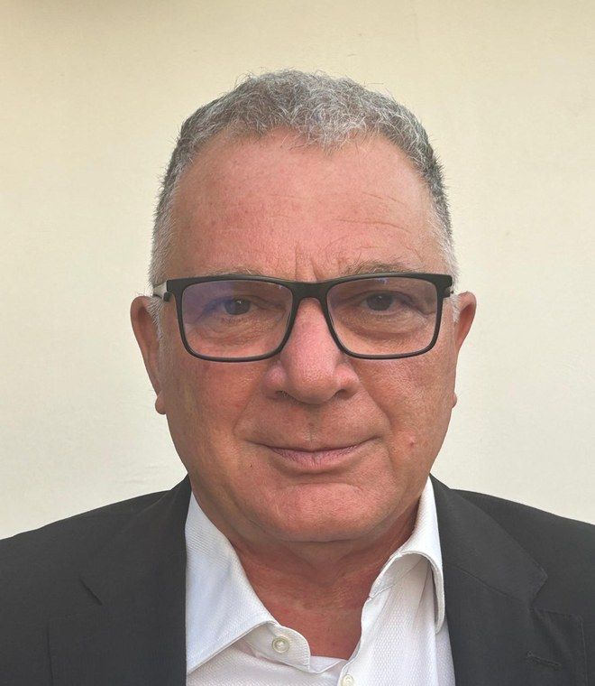

Sicurezza sul lavoro e relazioni industriali
Pietro Fazio
Dott. Perito Industriale · Magister Bioneer Energia & Ambiente
Unisce competenze tecniche, attenzione ai temi dell’energia e dell’ambiente e conoscenza delle dinamiche del lavoro. Affianca le imprese nelle questioni di sicurezza e relazioni industriali, con un approccio che considera la prevenzione e la qualità dell’organizzazione elementi essenziali per la continuità e la solidità aziendale.